# 半角シャープ以降は「コメント」です。Rの実行時には無視されます。
1 + 1 # 足し算
## [1] 2
2 - 1 # 引き算
## [1] 1
3 * 4 # 掛け算はアスタリスク
## [1] 12
8 / 2 # 割り算
## [1] 44 RStudioを用いた地理情報解析の基礎
ここでは、二回にわたってRを用いた地理情報解析を実践してゆきます。 まずは、解析用のフォルダを前回作成したPG2/以下にPG2/4/として作成しましょう。
4.1 （本当に雑な）Rの基礎
ここでは、本書でよく使うRの基本的な文法やデータ操作について触れます。Rの基礎をしっかりと学ぶ時間はないので、ざっくり本書で取り扱うサンプルコードの意図が汲み取れる状態を目指して、よく使う構文を攫っていきましょう。きちんと基礎から学びたい人には、卒業論文のためのRをお勧めします。
それではRStudioを開いて、Consoleと書かれた左下のペインにサンプルコードをコピペしながらRの使い方を学んでいきましょう！
4.1.1 演算
4.1.1.1 簡単な演算
まずは簡単な四則演算を行ってみましょう。 Rはじめ、多くのプログラミング言語では全角文字は使えません。 実行時に無視される「コメント」以外では使わないようにしましょう。 以下では、プログラムの実行結果を##で表現します。
4.1.1.2 変数
次に、「変数」を使ってみます。変数を使うと、計算結果などの任意の値に名前をつけることができます。変数に値を代入する際には、<-を使います。
a <- 1 + 2
a
## [1] 3
b <- 3 * 4
b
## [1] 12
c <- a + b
c
## [1] 154.1.1.3 関数
-や+以外の、もっと複雑な操作には「関数」を使います。 「関数」は、受け取った値に対して所定の処理を行い返す手続きのことです。 例えばsum()関数では、()の中に受け取った値を足し合わせて返します。
sum(1,2,3,4) # 足し合わせる
## [1] 10
mean(1,2,3,4) # 平均
## [1] 1
max(1,2,3,4) # 最大値
## [1] 4
min(1,2,3,4) # 最小値
## [1] 1
range <- max(1,2,3,4) - min(1,2,3,4) # 値の幅
range
## [1] 3関数は星の数ほどあるので、使い方を覚えるのは無理です。わからなくなった際には、Consoleに?関数名（例：?sum）と打つと、右下のHelpペインに使い方が表示されます。
4.1.1.4 ベクトル
最後の例では、min()とmax()の両方に、1,2,3,4という同じ値の組み合わせを入れていました。1,2,3,4をまとめて一つの変数に代入できれば便利そうですね。そういった時には、「ベクトル」を使います。ベクトルは同じ種類の値を複数個まとめたもので、c()関数で作ります。
a <- c(1,2,3,4)
a
## [1] 1 2 3 4
sum(a)
## [1] 10
range <- max(a) - min(a)
range
## [1] 34.1.2 型
上記では数字だけを取り扱ってきましたが、Rは数字以外のデータを扱うこともできます。 プログラミング言語では、データの種類のことを「型」と呼びます。 例えば、数字の1と文字としての”1”は全く別のものとして取り扱われます。 したがって、以下の例では文字である”1”を足し算で用いることができないため、エラーが生じます。
1 + "1"
## Error in 1 + "1": 二項演算子の引数が数値ではありませんそれでは、Rで用いられる（主な）型をみていきましょう。
4.1.2.1 数値 (numeric)
1 / 3
## [1] 0.33333334.1.2.2 文字列 (character)
"a"
## [1] "a"
paste("Hello", " ", "R") # paste()で文字列を結合します。半角スペースも立派な文字です。
## [1] "Hello R"4.1.2.3 論理 (logical)
a <- 2 + 3
a == 5 # 「同じか」は ==
## [1] TRUE
a != 5 # 「違うか」は !=
## [1] FALSE
a < 4
## [1] FALSE
a > 2
## [1] TRUE4.1.2.4 欠損値など (NA, Inf)
NA # 欠損値（あるはずの値がないもの、Not Available）
## [1] NA
1/0 # 無限大はInfになる
## [1] Inf
a <- NA
is.na(a) # is.na()で欠損値か確認できる
## [1] TRUE4.1.3 Rの基本はデータフレーム
ここからは、もう少し実践的な内容に移っていきます。 少し極端な言い方ですが、Rで取り扱うデータはほとんど「データフレーム」です。 データフレームとは、雑に言えばExcelで作られるような表形式のデータのことです。 例を挙げましょう。
# Rにデフォルトで入っているpenguinsデータを使う
head(penguins, 10) # 長いので10行目まで表示
## species island bill_len bill_dep flipper_len body_mass sex year
## 1 Adelie Torgersen 39.1 18.7 181 3750 male 2007
## 2 Adelie Torgersen 39.5 17.4 186 3800 female 2007
## 3 Adelie Torgersen 40.3 18.0 195 3250 female 2007
## 4 Adelie Torgersen NA NA NA NA <NA> 2007
## 5 Adelie Torgersen 36.7 19.3 193 3450 female 2007
## 6 Adelie Torgersen 39.3 20.6 190 3650 male 2007
## 7 Adelie Torgersen 38.9 17.8 181 3625 female 2007
## 8 Adelie Torgersen 39.2 19.6 195 4675 male 2007
## 9 Adelie Torgersen 34.1 18.1 193 3475 <NA> 2007
## 10 Adelie Torgersen 42.0 20.2 190 4250 <NA> 2007penguinsはRにサンプルデータとして含まれているデータセットで、文字通りペンギンの種類や体重などに関するデータが含まれています。上記のように、データフレームでは縦方向（列）に同じ種類、横方向（行）に同じ観測（この場合は個体）が来るようにデータが配置されます。
それでは、このデータで少し遊んでみましょう。
4.1.4 mutate()で新しい列を作る
以降では、tidyverseというパッケージ（群）を使います。tidyverseはデータフレームの処理やビジュアライゼーションを簡単に行うためのパッケージです。 パッケージの読み込みはlibrary()で行います。
まずは、既存の列の値を使って新しい列を作るmutate()関数を使ってみます。 ここでは、|>という記号で処理を繋いでいますね。これは「パイプ」と呼ばれるもので、その名の通り複数の処理を繋ぐためのものです。
library(tidyverse)
df <- penguins |>
mutate(
bill_size = bill_len * bill_dep, # 嘴の長さと高さを掛けて大きさにする
bill_aspect = bill_len / bill_dep # 嘴の縦横比
) |>
mutate(
relative_bill_size = bill_size / body_mass # 体重に比した嘴の大きさ
)
head(df, 10) # 10行目まで表示
## species island bill_len bill_dep flipper_len body_mass sex year
## 1 Adelie Torgersen 39.1 18.7 181 3750 male 2007
## 2 Adelie Torgersen 39.5 17.4 186 3800 female 2007
## 3 Adelie Torgersen 40.3 18.0 195 3250 female 2007
## 4 Adelie Torgersen NA NA NA NA <NA> 2007
## 5 Adelie Torgersen 36.7 19.3 193 3450 female 2007
## 6 Adelie Torgersen 39.3 20.6 190 3650 male 2007
## 7 Adelie Torgersen 38.9 17.8 181 3625 female 2007
## 8 Adelie Torgersen 39.2 19.6 195 4675 male 2007
## 9 Adelie Torgersen 34.1 18.1 193 3475 <NA> 2007
## 10 Adelie Torgersen 42.0 20.2 190 4250 <NA> 2007
## bill_size bill_aspect relative_bill_size
## 1 731.17 2.090909 0.1949787
## 2 687.30 2.270115 0.1808684
## 3 725.40 2.238889 0.2232000
## 4 NA NA NA
## 5 708.31 1.901554 0.2053072
## 6 809.58 1.907767 0.2218027
## 7 692.42 2.185393 0.1910124
## 8 768.32 2.000000 0.1643465
## 9 617.21 1.883978 0.1776144
## 10 848.40 2.079208 0.1996235以上では、bill_size、bill_aspect, relatibe_bill_sizeという３つの列を作ってみました。
4.1.5 filter()で行を絞り込む
次に、特定の列の値を使って行を絞り込みます。例えば、メス個体のデータだけ集めてみましょう。 filter()には絞り込みたい条件式（論理型を返す）を書きます。
df |>
filter(sex == "female") |>
head(10) # はじめの10行を表示
## species island bill_len bill_dep flipper_len body_mass sex year
## 1 Adelie Torgersen 39.5 17.4 186 3800 female 2007
## 2 Adelie Torgersen 40.3 18.0 195 3250 female 2007
## 3 Adelie Torgersen 36.7 19.3 193 3450 female 2007
## 4 Adelie Torgersen 38.9 17.8 181 3625 female 2007
## 5 Adelie Torgersen 41.1 17.6 182 3200 female 2007
## 6 Adelie Torgersen 36.6 17.8 185 3700 female 2007
## 7 Adelie Torgersen 38.7 19.0 195 3450 female 2007
## 8 Adelie Torgersen 34.4 18.4 184 3325 female 2007
## 9 Adelie Biscoe 37.8 18.3 174 3400 female 2007
## 10 Adelie Biscoe 35.9 19.2 189 3800 female 2007
## bill_size bill_aspect relative_bill_size
## 1 687.30 2.270115 0.1808684
## 2 725.40 2.238889 0.2232000
## 3 708.31 1.901554 0.2053072
## 4 692.42 2.185393 0.1910124
## 5 723.36 2.335227 0.2260500
## 6 651.48 2.056180 0.1760757
## 7 735.30 2.036842 0.2131304
## 8 632.96 1.869565 0.1903639
## 9 691.74 2.065574 0.2034529
## 10 689.28 1.869792 0.18138954.1.6 select()で列を選ぶ
最後に、欲しい列だけ選ぶselect()を使ってみます。select()ではかなり柔軟に列を選ぶことができます。
# 列名で選択
df |>
select(species, body_mass, year) |>
head(10)
## species body_mass year
## 1 Adelie 3750 2007
## 2 Adelie 3800 2007
## 3 Adelie 3250 2007
## 4 Adelie NA 2007
## 5 Adelie 3450 2007
## 6 Adelie 3650 2007
## 7 Adelie 3625 2007
## 8 Adelie 4675 2007
## 9 Adelie 3475 2007
## 10 Adelie 4250 2007
# "bill" で始まる列を選択
df |>
select(starts_with("bill")) |>
head(10)
## bill_len bill_dep bill_size bill_aspect
## 1 39.1 18.7 731.17 2.090909
## 2 39.5 17.4 687.30 2.270115
## 3 40.3 18.0 725.40 2.238889
## 4 NA NA NA NA
## 5 36.7 19.3 708.31 1.901554
## 6 39.3 20.6 809.58 1.907767
## 7 38.9 17.8 692.42 2.185393
## 8 39.2 19.6 768.32 2.000000
## 9 34.1 18.1 617.21 1.883978
## 10 42.0 20.2 848.40 2.079208
# "len"で終わる列を選択
df |>
select(ends_with("len")) |>
head(10)
## bill_len flipper_len
## 1 39.1 181
## 2 39.5 186
## 3 40.3 195
## 4 NA NA
## 5 36.7 193
## 6 39.3 190
## 7 38.9 181
## 8 39.2 195
## 9 34.1 193
## 10 42.0 1904.1.7 ggplot()で図を作る
お疲れ様です（書いてる僕も疲れました）。最後のステップ、いよいよデータを図にしてみましょう。図の作成にはggplot()を使います。基本的な使い方としては、
ggplot(aes(x = X軸に使う列名, y = Y軸に使う列名, ...)) + # どの列をどの軸に使うか
geom_グラフの種類() # グラフの種類を指定（例：geom_box()で箱ひげ図、geom_point()で散布図）のように書きます。ggplot()以降はパイプではなく+で処理を繋いでいきます（なぜ？僕に分かりません…）。他にも使う色のセットや文字の大きさなど、細かい設定を順次+で足していけるので、論文でそのまま使える綺麗な図を作成することができます。設定できる項目が膨大なのでちょっととっつきづらいですが、ググれば参考になる情報は多いので心配ありません。
# まず簡単な例。bill_lenとbody_massの関係をみてみます
df |> # ここはパイプ
drop_na() |> # NAを含む行を削除
ggplot(aes(x = body_mass, y = bill_len, color = species)) + # aes()でどの列をx軸、y軸、色に割り当てるかを指定
geom_point()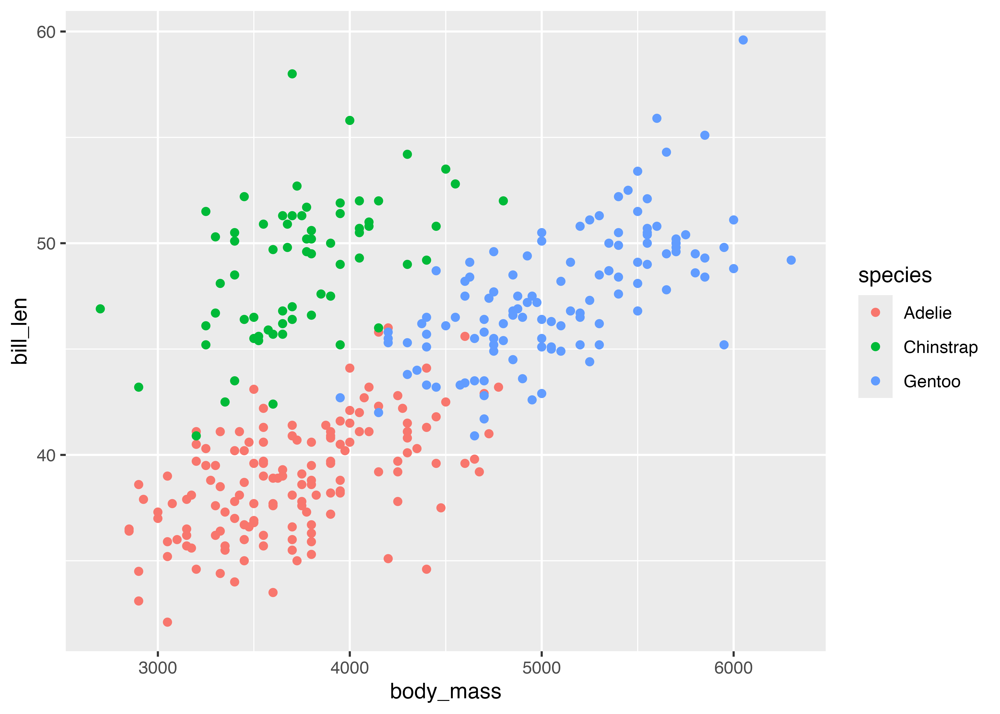
# 次に、種ごと、島ごと、性別ごとの体重をプロットしてみる
df |>
drop_na() |>
ggplot(aes(x = island, y = body_mass, fill = sex)) + # 輪郭や点の色はcolour、塗りつぶしの色はfillで指定
geom_violin() + # バイオリンプロット。見慣れないかもしれないけど、箱ひげ図の進化形です。
facet_wrap(~species) # 種ごとに図を分ける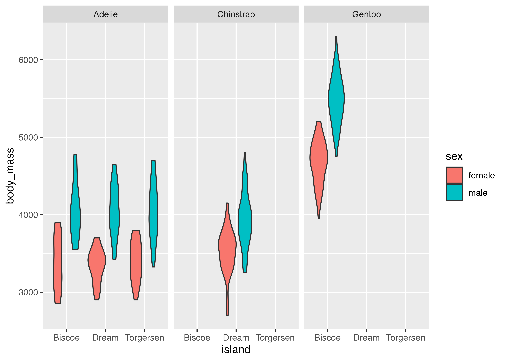
# 最後に、さっき作った列を使ってみる
df |>
drop_na() |>
ggplot(aes(x = relative_bill_size, y = bill_aspect, colour = sex)) +
geom_point() +
facet_wrap(~species)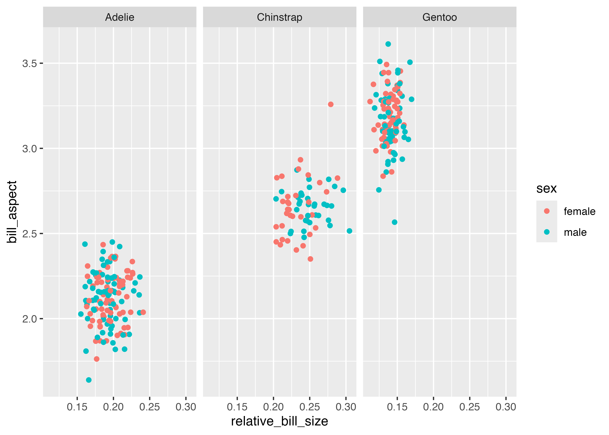
4.1.8 進む前に
さて、ここまできてプチ絶望している人も多いと想像しますが、次に行く前に Section 4.3 を読んでみてください。 プログラミングで大事なのは、悩まず手を動かす（試す、ググる、ChatGPTに聞く）こと、気楽に取り組むこと、です。
4.2 実践： DEMデータで遊ぶ
それでは地理情報解析に取り組んでみましょう。今回のテーマは、前章で軽く扱った国土地理院の数値標高モデル（DEM）データを用いて実践的な解析を行うことです。
4.2.1 データの準備
もう少し広い範囲のDEMデータを準備して、Rを駆使しながら遊んでみましょう。 まずは、前回と同様に基盤地図情報ダウンロードサービスからDEMデータをダウンロードします。墨田区から武蔵野市にかけて、東西方向に3つのタイルを選択します。
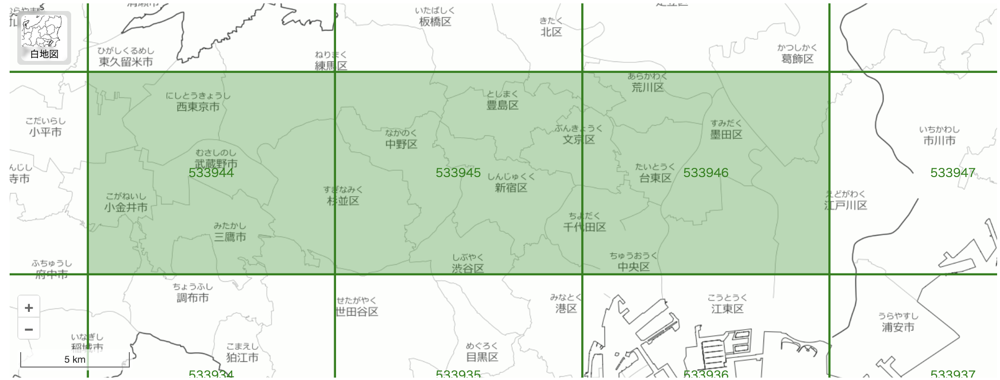
「ダウンロードリストに全て追加」→「ダウンロード等へ」→「まとめてダウンロード」を選択し、メールで送られてきたリンクからダウンロードします。 今回は、2025xxxxxxxxxxxx-001.zipのようなZIPファイルがダウンロードされているので、これをPG2/4/に移動し、解凍します。
4
└── 20250830131401458-001
├── FG-GML-533944-DEM5A-20250620.zip
├── FG-GML-533945-DEM5A-20250620.zip
├── FG-GML-533946-DEM5A-20250620.zip
├── fmdid15-3101.xml
└── fmdid25-3101.xmlこのような形で、.zipファイルが3つあるはずです。 それでは、これをそれぞれQGISでGeoTIFFファイルに変換しましょう。 今回は、GeoTIFFの出力先を[一時ファイル保存]にします。 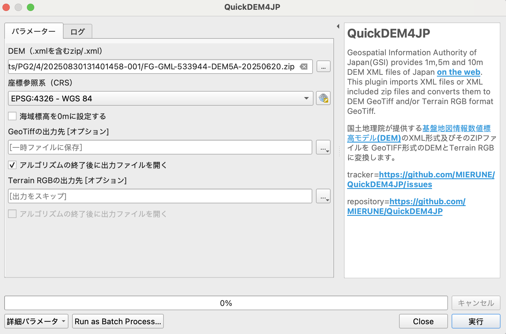
以下のような感じで、3つのDEMファイルが読み込まれました。
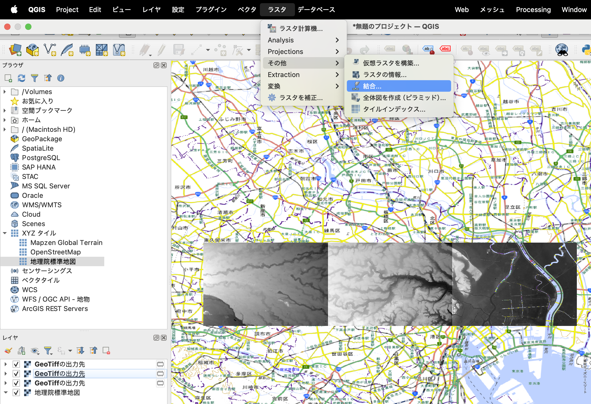
次に、これらを一つに結合します。ラスタ→その他→結合を選び、入力レイヤに先ほど作成された3つのレイヤ（GeoTIFFの出力先という名前のはず）を選択し、実行を押します。
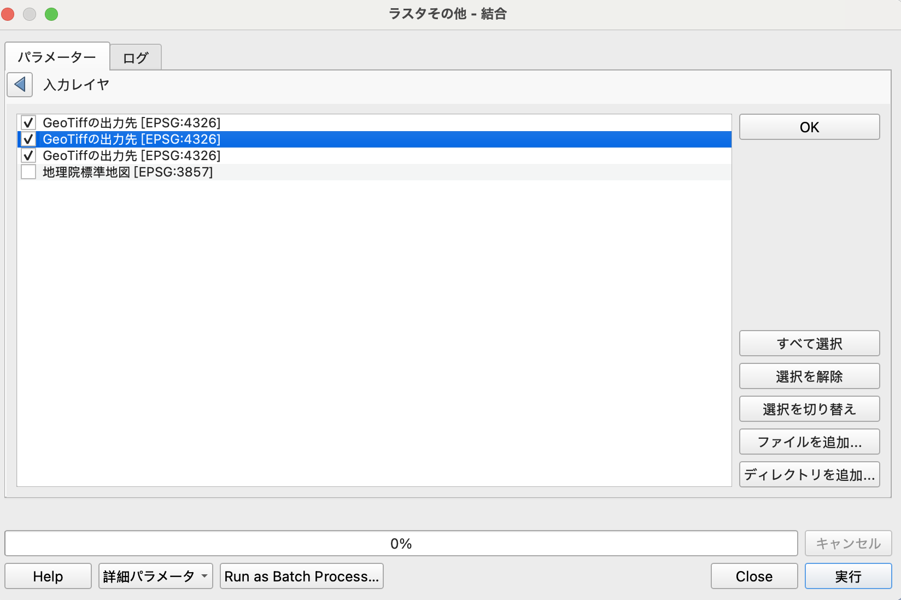
結合されたレイヤが作成されるので、これをGeoTIFFファイルとして保存します。 出力レイヤを右クリックし、エクスポート→名前をつけて保存を選びます。ファイル名を編集して、PG2/4/にdem_tokyoという名前で保存しましょう。
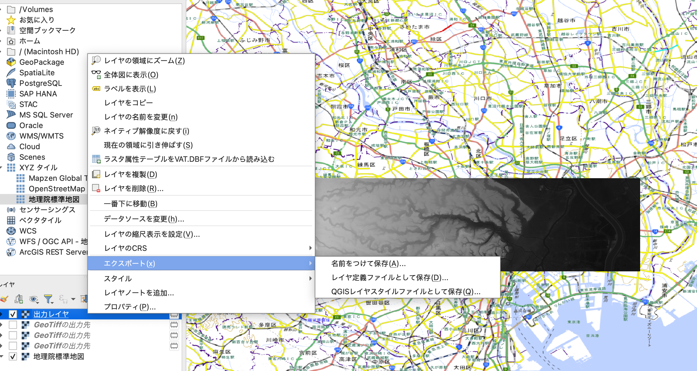
ファイルエクスプローラを使って、PG2/4/dem_tokyo.tifが存在することを確かめます。
4.2.2 まずはRで読み込んでみる
それでは、RStudioに画面を切り替えます。 RStudioの左上にある新規作成ボタン（白紙に緑のプラスマーク）を押し、R Scriptを選択します。Ctrl + S（Macの場合はCmd + S）を押すと、保存先のファイル名を聞かれるので、PG2/4/1_read_dem.Rとして保存します。
次に、Rを実行する場所を指定します。Session → Set Working Directory → To Source File Locationを選んで、RStudioに作業場所がPG2/4/であることを教えます。
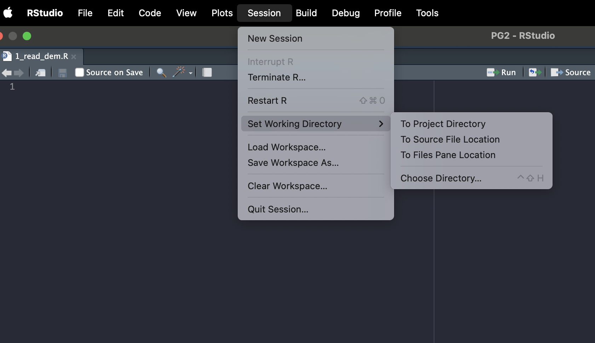
それでは、以下をコピペしてSourceと書かれたボタンを押します。右下のペインにDEMが表示されるはずです。
# 1_read_dem.R
setwd("~/Documents/PG2/4/") # 人によって違うかもしれません
library(terra)
library(tidyverse)
library(tidyterra)
dem <- rast('dem_tokyo.tif')
dem
# Rで図を書く際には、ggplotライブラリを使います。
ggplot() + # まずggplotを初期化し、+で要素を足していきます。
geom_spatraster(data = dem) # 次にgeom_spatraster()という種類の図を追加します。## class : SpatRaster
## size : 1500, 6750, 1 (nrow, ncol, nlyr)
## resolution : 5.555556e-05, 5.555556e-05 (x, y)
## extent : 139.5, 139.875, 35.66667, 35.75 (xmin, xmax, ymin, ymax)
## coord. ref. : lon/lat WGS 84 (EPSG:4326)
## source : dem_tokyo.tif
## name : dem_tokyo
## min value : -7.58
## max value : 74.444.2.3 市区ごとの標高をグラフにする
次に、ベクターデータと組み合わせて解析してみましょう。 満遍なく均一にデータが敷き詰められたラスターデータを、ベクターデータで特定のエリアごとに分割して集計する作業を行います。
まずは簡単な例として、DEMデータを市区ごとに分割し、市区ごとの標高分布をグラフにしてみます。
dem_tokyo.tifには武蔵野市、杉並区、中野区、新宿区、文京区、千代田区、台東区、墨田区が（おおむね）含まれているので、これらの市区間で比較しましょう。
書き始める前に、日本の自治体の地理情報をまとめたRパッケージjpndistrictをインストールします。 Consoleペインに以下を貼り付けて実行します。
install.packages("remotes")
remotes::install_github("uribo/jpndistrict")それでは、解析用のRスクリプトをPG2/4/2_dem_cities.Rとして作成します。
# 2_dem_cities.R
library(terra)
library(tidyverse)
library(tidyterra)
library(jpndistrict)
setwd("~/Documents/PG2/4/")
dem <- rast('dem_tokyo.tif')
# 欲しい市区の名称
city_names <- c("武蔵野市", "杉並区", "中野区", "新宿区",
"文京区", "千代田区", "台東区", "墨田区")
# 都道府県のJISコードを確認する
# 東京は13
jpnprefs |> print(n = 20)
## # A tibble: 47 × 11
## jis_code prefecture capital region major_island prefecture_en capital_en
## <chr> <fct> <chr> <chr> <chr> <chr> <chr>
## 1 01 北海道 札幌市 北海道 北海道 Hokkaido Sapporo-s…
## 2 02 青森県 青森市 東北 本州 Aomori-ken Aomori-shi
## 3 03 岩手県 盛岡市 東北 本州 Iwate-ken Morioka-s…
## 4 04 宮城県 仙台市 東北 本州 Miyagi-ken Sendai-shi
## 5 05 秋田県 秋田市 東北 本州 Akita-ken Akita-shi
## 6 06 山形県 山形市 東北 本州 Yamagata-ken Yamagata-…
## 7 07 福島県 福島市 東北 本州 Fukushima-ken Fukushima…
## 8 08 茨城県 水戸市 関東 本州 Ibaraki-ken Mito-shi
## 9 09 栃木県 宇都宮市 関東 本州 Tochigi-ken Utsunomiy…
## 10 10 群馬県 前橋市 関東 本州 Gunma-ken Maebashi-…
## 11 11 埼玉県 さいたま市 関東 本州 Saitama-ken Saitama-s…
## 12 12 千葉県 千葉市 関東 本州 Chiba-ken Chiba-shi
## 13 13 東京都 新宿区 （東京23区）… 関東 本州 Tokyo-to Shinjuku-…
## 14 14 神奈川県 横浜市 関東 本州 Kanagawa-ken Yokohama-…
## 15 15 新潟県 新潟市 中部 本州 Niigata-ken Niigata-s…
## 16 16 富山県 富山市 中部 本州 Toyama-ken Toyama-shi
## 17 17 石川県 金沢市 中部 本州 Ishikawa-ken Kanazawa-…
## 18 18 福井県 福井市 中部 本州 Fukui-ken Fukui-shi
## 19 19 山梨県 甲府市 中部 本州 Yamanashi-ken Kofu-shi
## 20 20 長野県 長野市 中部 本州 Nagano-ken Nagano-shi
## # ℹ 27 more rows
## # ℹ 4 more variables: region_en <chr>, major_island_en <chr>,
## # capital_latitude <dbl>, capital_longitude <dbl>
cities <- jpn_cities(jis_code = 13, admin_name = city_names)
# geometry列に市区のポリゴンデータが入っている
cities
## Simple feature collection with 8 features and 2 fields
## Geometry type: POLYGON
## Dimension: XY
## Bounding box: xmin: 139.5251 ymin: 35.66571 xmax: 139.8422 ymax: 35.74351
## Geodetic CRS: WGS 84
## # A tibble: 8 × 3
## city_code city geometry
## * <chr> <chr> <POLYGON [°]>
## 1 13101 千代田区 ((139.7299 35.68555, 139.7333 35.67916, 139.7367 35.67876,…
## 2 13104 新宿区 ((139.6735 35.71852, 139.679 35.71817, 139.6792 35.71464, …
## 3 13105 文京区 ((139.7174 35.71455, 139.7232 35.71032, 139.7317 35.70918,…
## 4 13106 台東区 ((139.7632 35.72184, 139.7685 35.71589, 139.7644 35.7173, …
## 5 13107 墨田区 ((139.8095 35.68689, 139.812 35.68851, 139.8116 35.69181, …
## 6 13114 中野区 ((139.6321 35.71686, 139.6417 35.71468, 139.6428 35.71141,…
## 7 13115 杉並区 ((139.5939 35.68901, 139.5905 35.68701, 139.593 35.68283, …
## 8 13203 武蔵野市 ((139.5271 35.70982, 139.5324 35.70901, 139.5322 35.70215,…
# DEMデータに合わせるように、市区データをラスタライズする
cities_raster <- cities |>
rasterize(dem, field = "city")
## Warning in y@pntr$rasterize(x@pntr, field, values, background, touches[1], :
## GDAL Message 1: DeprecationWarning: 'Memory' driver is deprecated since GDAL
## 3.11. Use 'MEM' onwards. Further messages of this type will be suppressed.
# DEMデータのセルに市区名が入ったデータが出来上がる
ggplot() +
geom_spatraster(data = cities_raster)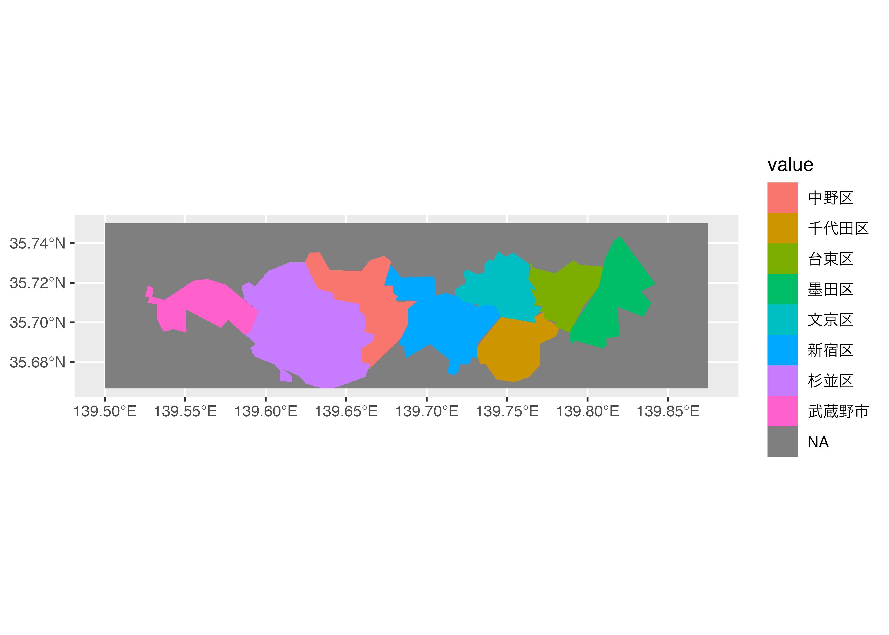
# DEMデータと市区名ラスターを結合し、データフレームに変える
dem_city <- c(dem, cities_raster) |>
as_tibble() |> # データフレームに変換
mutate(city = factor(city, levels = city_names)) |> # 表示順をcity_namesの順番にする
drop_na()
dem_city
## # A tibble: 4,069,252 × 2
## dem_tokyo city
## <dbl> <fct>
## 1 0 墨田区
## 2 0 墨田区
## 3 0 墨田区
## 4 0 墨田区
## 5 0 墨田区
## 6 0 墨田区
## 7 0 墨田区
## 8 0 墨田区
## 9 0 墨田区
## 10 0 墨田区
## # ℹ 4,069,242 more rows
# geom_histgram()でヒストグラムを作成
# x軸は標高にしたいので、dem_tokyoを指定
# facet_wrap()でcity別にヒストグラムを作る
# labs()で軸のラベルを変える
dem_city |>
ggplot() +
geom_histogram(mapping = aes(x = dem_tokyo)) +
facet_wrap(~city) +
labs(x = "DEMデータの標高（m）", y = "頻度")4.2.4 地形の断面を見てみる
次に、地図上に線を引いて地形の断面を見てみましょう。 まずは断面の元になる線をQGISで引きます。
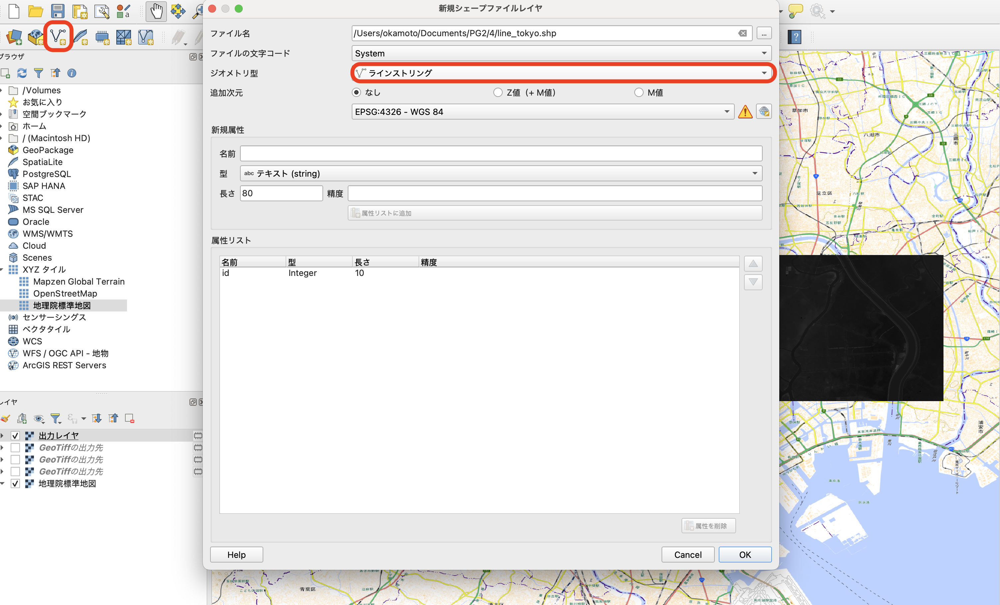
新規シェイプファイルレイヤをクリックし、ジオメトリ型にはラインストリングを指定、PG2/4/line_tokyo.shpとして保存します。

編集モードを切り替え、線の地物を追加を押してから地図上に適当な線を引きます。ダブルクリックすると線の描画を終了できます。最後にレイヤ編集内容を保存を押して保存しましょう。
これをRで読み込みます。 新しく、PG2/4/3_cross_section.Rを作成しましょう。
# 3_cross_section.R
library(terra)
library(tidyverse)
library(tidyterra)
library(jpndistrict)
library(sf)
setwd("~/Documents/PG2/4/")
# DEMを読み込む
dem <- rast("dem_tokyo.tif")
# 線を読み込む
section <- st_read("line_tokyo.shp")
## Reading layer `line_tokyo' from data source
## `/Users/okamoto/Documents/PG2/4/line_tokyo.shp' using driver `ESRI Shapefile'
## Simple feature collection with 1 feature and 1 field
## Geometry type: LINESTRING
## Dimension: XY
## Bounding box: xmin: 139.5015 ymin: 35.70942 xmax: 139.87 ymax: 35.70942
## Geodetic CRS: WGS 84
# 市区のデータをDEMに合わせてラスターにする
city_names <- c("武蔵野市", "杉並区", "中野区", "新宿区",
"文京区", "千代田区", "台東区", "墨田区")
cities_raster <- jpn_cities(jis_code = 13, admin_name = city_names) |>
rasterize(dem, field = "city")
# とりあえずプロット
ggplot() +
geom_spatraster(data = dem) +
geom_sf(data = section, colour = "white")
# 線に沿って標高と市区名を取得
# x（経度）,y（緯度）, 値の入ったデータフレームが返ってくる
elevation <- extractAlong(dem, section, xy = TRUE, ID = FALSE)
cities <- extractAlong(cities_raster, section, xy = TRUE, ID= FALSE)
# 両者を結合し、横軸を経度、縦軸を標高、色を市区名にした折れ線グラフを描く
elevation |>
mutate(city = factor(cities$city, levels = city_names)) |> # 新しい列としてcityを追加
drop_na() |>
ggplot(aes(x = x, y = dem_tokyo, colour = city)) +
geom_line() +
labs(x = "経度", y = "標高", colour = "市区名")4.2.5 河川の標高と傾斜をグラフにする
最後に、河川に沿って同様の図を描いてみましょう。折よくこのエリアには神田川が流れているので、神田川に沿って、標高の変化をグラフにします。今回は追加で、DEMから傾斜角も算出してみます。
まずは、河川のデータを取得します。 国土数値情報ダウンロードサイトから河川データがダウンロードできます。データの選択で東京都を選び、ダウンロードしてください。
W05_08_13_GML.zipがダウンロードされたと思うので、これをPG2/4/に移動して解凍します。中にはStream.shpと、RiverNode.shpの二つが入っていますが、今回は前者を使います。
それではRスクリプトを書いていきましょう。 今回のファイル名はPG2/4/4_stream.Rにします。
# 4_stream.R
library(terra)
library(tidyverse)
library(tidyterra)
library(jpndistrict)
library(sf)
setwd("~/Documents/PG2/4/")
dem <- rast("dem_tokyo.tif")
stream <- st_read("W05-08_13_GML/W05-08_13-g_Stream.shp")
## Reading layer `W05-08_13-g_Stream' from data source
## `/Users/okamoto/Documents/PG2/4/W05-08_13_GML/W05-08_13-g_Stream.shp'
## using driver `ESRI Shapefile'
## Simple feature collection with 1388 features and 10 fields
## Geometry type: LINESTRING
## Dimension: XY
## Bounding box: xmin: 138.9525 ymin: 26.63934 xmax: 142.2142 ymax: 35.89437
## CRS: NA
stream
## Simple feature collection with 1388 features and 10 fields
## Geometry type: LINESTRING
## Dimension: XY
## Bounding box: xmin: 138.9525 ymin: 26.63934 xmax: 142.2142 ymax: 35.89437
## CRS: NA
## First 10 features:
## W05_001 W05_002 W05_003 W05_004 W05_005 W05_006 W05_007
## 1 830305 8303050000 0 小川谷 3 1 #gb03_1300005
## 2 830305 8303050000 0 小川谷 3 1 #gb03_1300005
## 3 830305 8303050000 0 コツ谷 4 1 #gb03_1300004
## 4 830305 8303050000 0 小川谷 3 1 #gb03_1300005
## 5 830305 8303050000 0 小川谷 3 1 #gb03_1300005
## 6 830305 8303050000 0 タキ谷 4 1 #gb03_1300013
## 7 830305 8303050000 0 名称不明 4 1 #gb03_1300014
## 8 830305 8303050000 0 名称不明 4 1 #gb03_1300018
## 9 830305 8303050000 0 小川谷 3 1 #gb03_1300005
## 10 830305 8303050000 0 スクレ谷 3 1 #gb03_1300011
## W05_008 W05_009 W05_010 geometry
## 1 #gb03_1300079 #gb03_1300005 #gb03_1300006 LINESTRING (139.0178 35.889...
## 2 #gb03_1300079 #gb03_1300006 #gb03_1300007 LINESTRING (139.018 35.8895...
## 3 #gb03_1300007 #gb03_1300004 #gb03_1300007 LINESTRING (139.0123 35.890...
## 4 #gb03_1300079 #gb03_1300007 #gb03_1300008 LINESTRING (139.018 35.8891...
## 5 #gb03_1300079 #gb03_1300008 #gb03_1300009 LINESTRING (139.0221 35.881...
## 6 #gb03_1300008 #gb03_1300013 #gb03_1300008 LINESTRING (139.0142 35.880...
## 7 #gb03_1300017 #gb03_1300014 #gb03_1300017 LINESTRING (139.0438 35.879...
## 8 #gb03_1300017 #gb03_1300018 #gb03_1300017 LINESTRING (139.0424 35.876...
## 9 #gb03_1300079 #gb03_1300009 #gb03_1300020 LINESTRING (139.0222 35.881...
## 10 #gb03_1300021 #gb03_1300011 #gb03_1300021 LINESTRING (139.0361 35.880...
# W05_004には河川名称が入っているので、これが神田川の行だけ選ぶ
# 距離の計算に使いやすいように、st_transform()でCRSをUTM(54)に変換
kandagawa <- stream |>
filter(W05_004 == "神田川") |>
st_set_crs(4326) |>
st_union() |>
st_transform(6691)
kandagawa
## Geometry set for 1 feature
## Geometry type: LINESTRING
## Dimension: XY
## Bounding box: xmin: 371328.3 ymin: 3948213 xmax: 390425.7 ymax: 3953163
## Projected CRS: JGD2011 / UTM zone 54N
# 1mあたり0.01個の密度（=100 m間隔）で神田川に沿って点をサンプリング
kandagawa_points <- st_line_sample(kandagawa, density = 0.01) |>
st_cast("POINT") |>
st_as_sf() |>
arrange(desc(row_number())) |> # 順序を反転させ
mutate(distance = (row_number() * 100)) # 河口からの距離を計算
# 欲しい市区の名前をDEMの各セルに紐付け
city_names <- c("武蔵野市", "杉並区", "中野区", "新宿区",
"文京区", "千代田区", "台東区", "墨田区")
cities_raster <- jpn_cities(jis_code = 13, admin_name = city_names) |>
rasterize(dem, field = "city")
# 重ねてみる
ggplot() +
geom_spatraster(data = dem) +
geom_sf(data = kandagawa_points, aes(colour = distance)) +
scale_color_viridis_c() + # 河口からの距離はカラーマップを変える
labs(colour = "河口からの距離 (m)", fill = "標高")
# 神田川沿いにサンプリングした100m間隔の点の標高を取得
elevation <- terra::extract(dem, kandagawa_points, bind = TRUE, exact = TRUE) |>
st_as_sf()
## Warning: [extract] transforming vector data to the CRS of the raster
# 同様に、点の市区名を取得。
cities <- terra::extract(cities_raster, kandagawa_points, bind = TRUE) |>
st_as_sf()
## Warning: [extract] transforming vector data to the CRS of the raster
# 河口からの距離と標高をプロットしてみる。
elevation |>
mutate(city = cities$city) |>
ggplot(aes(x = distance, y = dem_tokyo, colour = city)) +
geom_point() +
scale_x_reverse() + # X軸は降順にする
labs(x = "河口からの距離 (m)", y = "標高", colour = "市区")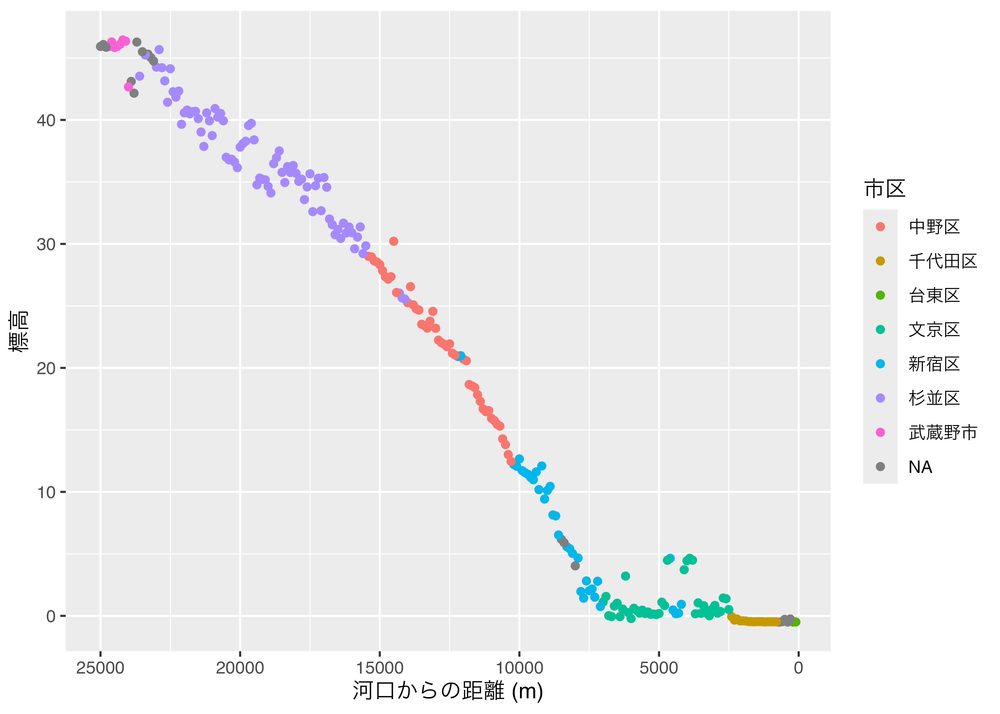
あれ、川は坂を登ることはないはずですが、文京区と新宿区のあたりで妙な挙動を示していますね。神田川を地図にプロットして何が起きてるかみてみましょう。 以下を書き加えます。
# 4_stream.R（続き）
library(leaflet)
elevation |>
mutate(city = cities$city) |>
st_transform(4326) |> # Leafletで表示するために緯度経度に直す
filter(city %in% c("新宿区", "文京区")) |> # 新宿区or文京区で
filter(dem_tokyo > 2.5 & dem_tokyo < 5) |> # 標高が2.5 ~ 5 m
filter(distance < 6000) |> # 河口からの距離が6km以内の場所に絞る
leaflet() |>
addTiles() |> # Add default OpenStreetMap map tiles
addMarkers()首都高でした！ここですね。

4.3 余談：プログラミングに入門するときのコツ
いきなり意味のわからないプログラムが出てきてやる気なくしますよね（普通そうだと思います）。しかし、ちょっとした解析やデータの整理、グラフ作成を行う能力はきっと将来役に立つはずです。Rはそのためのツールとしてとても優れています。とはいえ、「コピペだけしても何もわかった気にならない」みたいな気持ちを持ったまま授業に臨むのは辛いので、ここでは僕がプログラミングに入門する際に重要だと思っていることを書きます。
雑にやる
プログラムの意味が分かってなくても、動けばいいです。 「なんか絵が出た！」という素朴な楽しさを大切にしましょう。考える前に調べる
はじめのうちは考えても無駄です。とにかく、ちょっとでも躓いたらすぐさま調べるようにしましょう。調べる方法は3つあります。- RのHelpを使う
関数の使い方がわからない時は、まずこれをします。Consoleに?調べたい関数名（例：?sum）と入れると、関数の説明書が出てきます。 - ググる
Rは日本語ユーザーも多いので、高確率で何か出てきます。ググる際には、「R 関数名 エラーの内容」「R パッケージ名 やりたいこと」などの形式で調べると良いでしょう。 - チャッピー
結局これが一番いい気がしてきました…ChatGPTに聞きましょう！コードを貼って、このエラーが出たけどなんで？とか、こういうことをしたいんだけどどうすればいい？と聞けばいつでも朗らかなチャッピーが優しく教えてくれます。
- RのHelpを使う
エラーメッセージは「怒られ」ではない
エラーが出たらちょっとびっくりしますよね。エラーが出ると怒られた気持ちになってプログラミングを挫折したという話も聞いたことがあります。しかし、エラーが出ないように気をつけてプログラムを書くのは、（R初学者にとっては）あまり良いとは思いません。エラーをたくさん読むことが、プログラムのルールを学ぶ近道だと思います。自信がなくてもとりあえず実行してみて、結果を見ながら改善する、というループをできるだけたくさん回しましょう。とにかく確認する
なぜかプログラムが動かない、そんな時は悩まずにプログラムの途中で生成されている変数やデータフレームを確認する癖をつけましょう。例えばdfという名前のデータフレームをいじっているのならば、まずはConsoleペインにdfと打って中身を見てみます。パイプで処理をつなげているときは、どこで問題が起きているか区別するためにそれぞれの段階の結果を出力してみると良いでしょう。